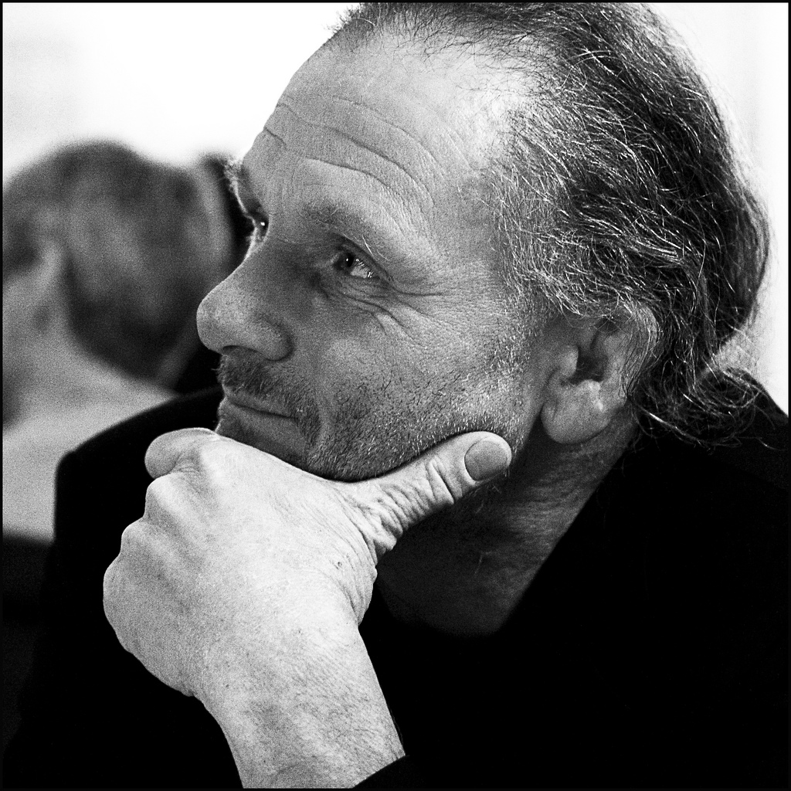

About
Software has become an essential part of our critical national infrastructure, such as transport systems, banking industries, and energy generation, and a key element in devices in the medical and automotive sector. The failure of such software-based systems can have profound consequences both for individuals and for companies that are responsible for delivering such software.
High integrity software and system engineering used to be the realm of avionics and the military, but with today's highly-interconnected and mobile systems, it is increasingly needed for common applications to be able to demonstrate their reliability, robustness, safety, security and maintainability. As such, sound technologies that can address these high integrity concerns in an efficient manner are one of today’s key engineering challenges.
The High Integrity Systems Forum is a network than brings together practitioners and researchers to discuss the challenges and opportunities in high integrity software and system engineering.
In addition to online exchange, the HISF members meet yearly on the High Integrity Systems Symposium.
Steering Committee
-

Magne Haveraaen, University of Bergen, Norway (Chair)
Magne Haveraaen is a full professor at the Department of Informatics, University of Bergen (UoB), where he is heading the Bergen Language Design Laboratory (BLDL). Haveraaen's research interests are in both the theoretical and the pragmatical aspects of domain engineering, language design and formal methods.
-
Hans Schaefer, Independent consultant, Norway
Hans Schaefer is independent consultant in software testing in Norway. He is president of the Norwegian Testing Board. He has been consulting and teaching software testing methods since 1984. He organizes the Norwegian Special Interest Group in Software Testing for Western Norway. His work emphasis is consulting, teaching and coaching test process improvement and test design techniques as well as reviews.
-
Leon Moonen, Simula Research Laboratory, Norway
Leon Moonen is a senior research scientist in the Software Engineering department at Simula Research Laboratory, Norway. His research aims at creating better techniques and tools to support the understanding, assessment and evolution of large industrial software systems. This combines several subfields of software engineering, such as program comprehension, reverse engineering, program analysis, software visualization and empirical software engineering. Currently ongoing projects include recommendation systems to support smarter evolution and testing of safety-critical cyber-physical product families, and software analytics for measuring and managing technical debt (i.e. software quality and maintainability assessments). Dr. Moonen has published nearly 100 scientific papers and serves on steering-, organizing-, and program committees of international conferences on software maintenance and evolution, reverse engineering, program understanding, and source code analysis.